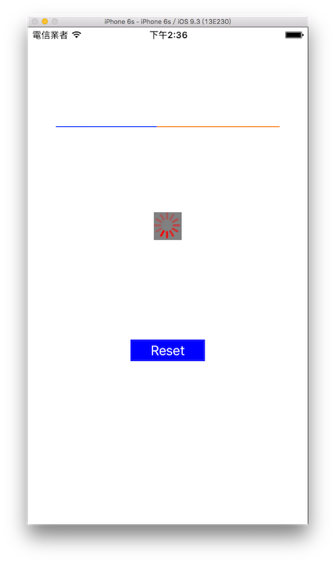

進度條 UIProgressView
當應用程式要執行一個需要花點時間的工作時，通常會使用進度條來告訴使用者，目前正在執行程式中，請稍後。UIKit 提供了兩種可以使用的進度條，一個是長條進度條 UIProgressView 以及環狀進度條 UIActivityIndicatorView 。
這節會一起示範這兩種進度條，以下是本節目標，分別建立兩種進度條，並放置一個按鈕用來重新執行進度條：

首先在 Xcode 裡，新建一個 Single View Application 類型的專案，取名為 ExUIProgressView 。
一開始先為ViewController建立六個屬性：
class ViewController: UIViewController {
var myProgressView:UIProgressView!
var myActivityIndicator:UIActivityIndicatorView!
var myTimer:Timer?
var myButton:UIButton!
var count = 0
let complete = 100
// 省略
}
建立 UIProgressView
先在viewDidload裡建立一個長條進度條 UIProgressView ，如下：
// 建立一個 UIProgressView
myProgressView = UIProgressView(
progressViewStyle : .default)
// UIProgressView 的進度條顏色
myProgressView.progressTintColor = UIColor.blue
// UIProgressView 進度條尚未填滿時底下的顏色
myProgressView.trackTintColor = UIColor.orange
// 設置尺寸與位置並放入畫面中
myProgressView.frame = CGRect(
x: 0,y: 0,
width: fullScreenSize.width * 0.8,height: 50)
myProgressView.center = CGPoint(
x: fullScreenSize.width * 0.5,
y: fullScreenSize.height * 0.2)
self.view.addSubview(myProgressView)
上述程式中可以看到，使用UIProgressView(progressViewStyle:)建立，有兩種樣式可以選擇，分別為.default及.bar。要讓進度可以推進則是使用到progess屬性，稍後會繼續介紹。
請注意 UIProgressView 只可以設定寬度( width ) ，而高度( height )是固定的。
建立 UIActivityIndicatorView
接著在viewDidload裡建立一個環狀進度條 UIActivityIndicatorView ，如下：
// 建立一個 UIActivityIndicatorView
myActivityIndicator = UIActivityIndicatorView(
activityIndicatorStyle:.whiteLarge)
// 環狀進度條的顏色
myActivityIndicator.color = UIColor.red
// 底色
myActivityIndicator.backgroundColor =
UIColor.gray
// 設置位置並放入畫面中
myActivityIndicator.center = CGPoint(
x: fullScreenSize.width * 0.5,
y: fullScreenSize.height * 0.4)
self.view.addSubview(myActivityIndicator);
上述程式中可以看到，使用UIActivityIndicatorView(activityIndicatorStyle:)建立，有三種樣式可以選擇，分別為.gray、.white及.whiteLarge。要啟動與停止則是使用到startAnimating()及stopAnimating()方法，稍後會繼續介紹。
請注意 UIActivityIndicatorView 設定的尺寸只會影響底色部分的大小，環狀進度條的尺寸部份則是固定無法變動。
模擬進度推進
在viewDidload裡建立一個按鈕用來重設進度以測試，並在viewDidload的最後先執行一次進度條的動作：
// 建立一個 UIButton
myButton = UIButton(frame: CGRect(
x: 0, y: 0, width: 100, height: 30))
myButton.setTitle("Reset", for: .normal)
myButton.backgroundColor = UIColor.blue
myButton.addTarget(
nil,
action: #selector(ViewController.clickButton),
for: .touchUpInside)
myButton.center = CGPoint(
x: fullScreenSize.width * 0.5,
y: fullScreenSize.height * 0.65)
self.view.addSubview(myButton)
// 先執行一次進度條的動作
self.clickButton()
接著是按下按鈕後執行動作的方法：
@objc func clickButton() {
// 進度推進時讓按鈕無法作用
myButton.isEnabled = false
// 分別重設兩個進度條
myProgressView.progress = 0
myActivityIndicator.startAnimating()
// 建立一個 Timer
myTimer = Timer.scheduledTimer(
timeInterval: 0.2,
target: self,
selector: #selector(ViewController.showProgress),
userInfo: ["test":"for userInfo test"],
repeats: true
)
}
上述程式可以看到利用 Timer 來設定一個計時器，以模擬進度推進。
Timer 是一個用來定時執行動作的類別，以下介紹scheduledTimer()方法的各參數：
- timeInterval：第一個參數是間隔多久執行一次動作，單位是秒。
- target：執行動作的對象，通常是
self。 - selector：定時執行的方法。
- userInfo：可以把需要的參數帶入方法中，沒有的話就填
nil。 - repeats：是否可以重複執行，如果填
false則是執行一次即不再動作。
在按下按鈕後，就會啟動一個 Timer ，以下則是這個計時器定時執行的方法：
@objc func showProgress(_ sender: Timer) {
// 以一個計數器模擬背景處理的動作
count += 5
// 每次都為進度條增加進度
myProgressView.progress =
Float(count) / Float(complete)
// 進度完成時
if count >= complete {
// 示範 userInfo 傳入的參數
var info =
sender.userInfo as?
Dictionary<String, AnyObject>
print(info?["test"] ?? "")
// 重設計數器及 Timer 供下次按下按鈕測試
count = 0
myTimer?.invalidate()
myTimer = nil
// 隱藏環狀進度條
myActivityIndicator.stopAnimating()
// 將按鈕功能啟動
myButton.isEnabled = true
}
}
上述程式可以看到，使用屬性count每 0.2 秒 +5 ，來模擬進度推進的效果，當count加到 100 時則是完成進度，會重設各設定，以利下次按下按鈕繼續測試。
以上就是本節範例的介紹。請注意，本節範例只是示範用，實際使用進度條的情況應該是，在執行一個需要花點時間的工作時啟動，在這個工作完成時結束。
範例
本節範例程式碼放在 uikit/uiprogressview